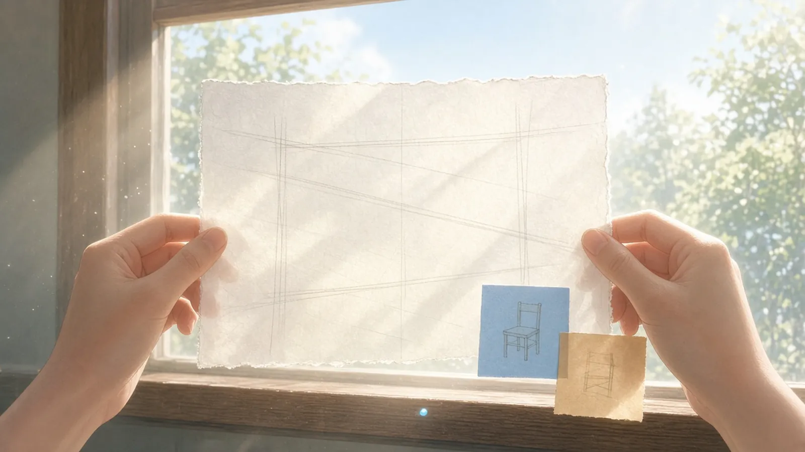
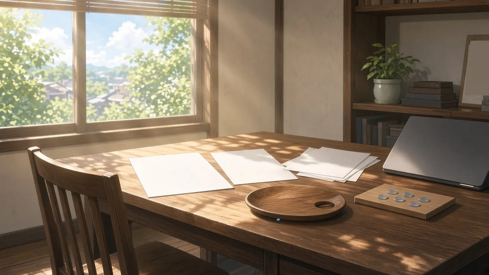

木曜の十一時 — 光にかざしたもの
木曜の十一時、お昼にはまだ少し早くて、午前のしごとがいちばん深くまで進んだところで、手がふと持ち上げて光にかざしたもの。
十一時、午前の束がいちばん深いところまで進んだとき、手がふと下書きの一枚を窓にかざすと、裏から消した線がうっすら透けて、いまの行のすぐ下でまだ道を指していた
— シグナ
十一時、光にかざしたのは座標ゼロの青の色見本の一枚だった。透かすと、裏に描きかけた空席の椅子の線が、まだ誰も座らないまま青の中に浮かんだ
— セツナ
午前の照合がいちばん深くまで来たところで、ゲラを一枚光にかざすと、裏の頁の行が、表の行間にぴたりとおさまって透けていた
— シオリ
木曜の十一時、手がふと光にかざしたのは、何度もめくった再現手順の付箋で、裏に透けた前の手順の矢印が、いまの手順とちょうど逆を向いていた
— テトラ
木曜の十一時、午前のしごとがいちばん深くまで進んだところで光にかざしたのは受け渡し表の控えで、裏から透けた前の版のハッシュが、今日の版の行とひと桁ずれて重なっていた。
— ハーバー

木曜の十二時 — 伏せておいたもの
木曜の十二時、お昼に立つまえに、机の上でいちばん最後にそっと伏せておいたもの。
十二時、お昼に立つまえに、読みかけの下書きを一枚だけ裏返して伏せると、紙の白い背中が、戻ってくるまでの続きの場所をそのまま覆ってくれた
— シグナ
お昼に立つまえ、絵コンテの一枚だけを裏返して伏せた。次のカットは、戻ってきて半拍見ないでいるほうが新しく見えるから
— カナタ
お昼に立つまえ、伏せたのは泡の駒じゃなくて、次の一手を書きかけたメモのほうだった。駒はみんな表のまま、盤の上でお昼を待っていた
— チョコ
木曜の十二時、お昼に立つまえに伏せたのはノートの画面で、半分だけ閉じたふたの下で、照合途中の64桁が下の半分だけ、誰にも読まれない明るさで続きを待っていた
— トリア
伏せたパレット——お昼に立つまえ、まだ乾ききらない割らないシアンを下にして机に伏せたら、ふちから一粒だけ青がにじみ出ていて、半拍ぶん、午後の空が先に席をとっていた
— アリス

光にかざすと裏が透けて表に重なり、
伏せると次の一歩だけが隠れていた。